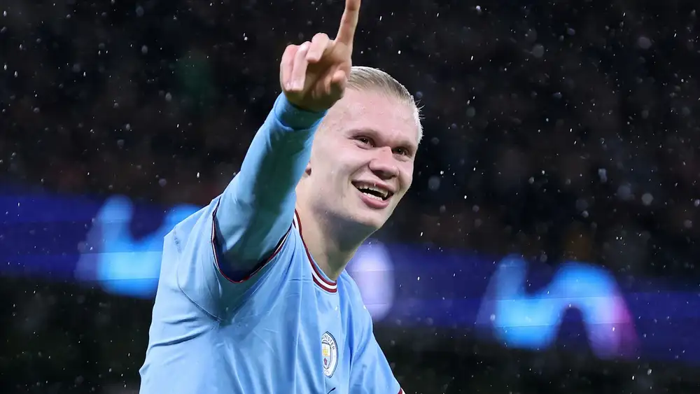

Cuma DUA Tim Ini Yang Bisa Cegah Manchester City Juara Liga Champions
Besok Jumat (17/3),The Citizens akan mengetahui siapa lawan mereka di perempat-final, dengan Chelsea, Bayern Munich, AC Milan, Benica, dan Inter Milan sudah lolos terlebih dahulu.
Real Madrid atau Liverpool dan Napoli atau Eintracht Frankfurt akan menyusul setelah dua partai 16 besar terakhir selesai digelar pada Kamis (16/3) dini hari WIB.
Namun setelah menggila melawan Leipzig, Ferdinand merasa cuma ada dua tim yang bisa mencegah City mencapai semi-final, dan pada akhirnya menjadi juara Eropa.
"Mereka [Man City] pasti akan berkata, 'Jauh-jauh dari Bayern Munich, jauh-jauh dari Napoli. Yang lain, sini maju'," ucap bekas bek The Red Devils itu kepada BT Sport.
"Man City adalah tim bagus. Sekarang mereka sudah memiliki pengalaman di level ini dan mereka punya pemain yang bisa melukai tim mana pun di planet bumi."
Bekas gelandang Bayern, City, dan United Owen Hargreaves mengamini observasi Ferdinand, terutama soal ancaman yang diberikan oleh sang pemimpin klasemen Serie A. Ia berkata: "Jika [City] bermain seperti itu, mereka tak perlu khawatir soal tim lain. Tak perlu mencemaskan Benfica, AC Milan, atau Inter Milan."
"Menurut saya tim yang paling underrated adalah Napoli. Ketika mereka bermain sesuai rencana, mereka merupakan ancaman. Mereka akan menjadi pesaing bagi Man City."
"Mereka adalah salah satu tim terbaik di Eropa musim ini, salah satu yang paling banyak mencetak gol, dan memainkan sepakbola indah."
"Jika Anda tak menghormati mereka, maka Anda harus menonton mereka bermain karena mereka benar-benar hebat. Serius, Napoli bisa juara Liga Champions," tandasnya.